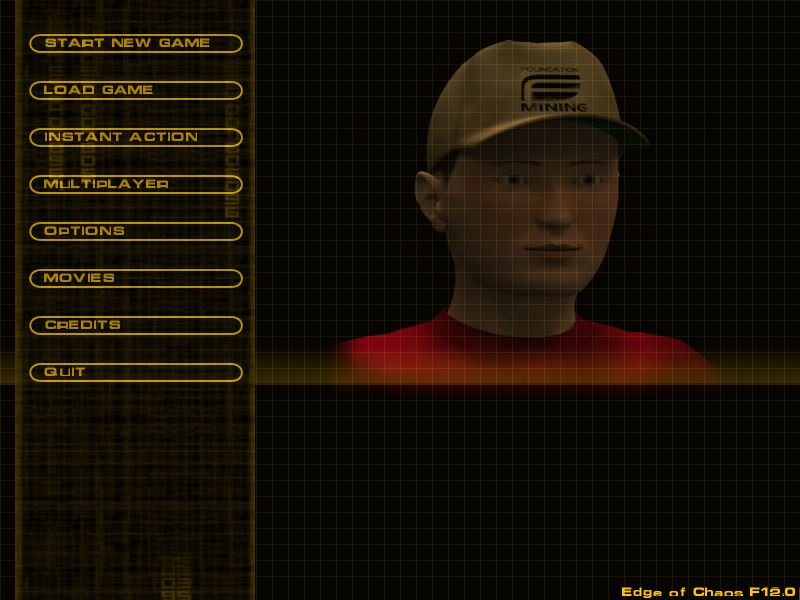
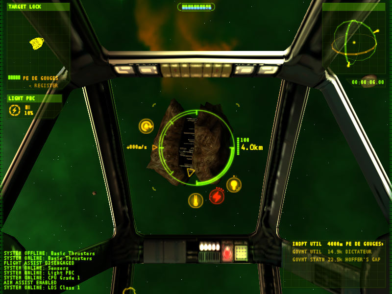

名稱：星海梟雄2／獨立戰爭2／星際戰爭2／太空遊俠2：混沌邊緣／星際爭霸2：終極危機
(Independence War 2: Edge of Chaos，英文版)
簡介：Particle 2001年出品的太空飛行戰鬥模擬遊戲，由Infogrames代理發行，台灣由大宇
代理進口，但並未中文化 [待補]。


保護：光碟
備註：VirtualBox無法執行，虛擬機請使用VMware。
操作：BackSpace = 取消